User Manual
1. Home
HOME은 로그인 후 처음으로 보여지는 메뉴입니다. 우측 상단에서 다크 테마를 해제할 수 있습니다.
전체 메뉴와 모니터 테마를 한 눈에 확인하여 원하는 메뉴로 이동할 수 있습니다.
★ 로 등록한 자주 사용하는 테마 및 메뉴를 확인할 수 있으며, 양측 버튼을 클릭하여 전체 테마와 전체 메뉴를 확인할 수 있습니다.
- - 유저가 소유한 테마 중 공유하지 않은 테마.
- - 유저가 소유한 테마 중 공유 중인 테마.
 - 즐겨찾기 설정하지 않은 테마 및 메뉴
- 즐겨찾기 설정하지 않은 테마 및 메뉴 - 즐겨찾기 설정하지 않은 테마 및 메뉴
- 즐겨찾기 설정하지 않은 테마 및 메뉴- - 테마 및 메뉴 새 창으로 열기
2. DASHBOARD
DASHBOARD는 MANAGER에 연결된 CLIENT들의 상태 및 자원 사용 현황, 사용량이 높은 서버, 사용량 패턴, 이벤트 발생 여부 등을 쉽게 확인할 수 있도록 구성되어 있습니다.
DASHBOARD 의 위젯은 한 row 가 다른 row 와 위치 변경이 가능합니다.
1) Notification & Sidebar
모니터 연결 여부와 Event, Process, Error Log, Param 상태를 확인할 수 있습니다.
| 메뉴 | 설명 |
|---|---|
| Up List | Manager에 연결되어 데이터를 모니터링 할 수 있는 CLIENT를 보여줍니다. |
| Down List | Manager와의 연결이 끊어진 CLIENT를 보여줍니다. |
| Event List | 주의, 경고 권고치 값을 초과한 CLIENT를 보여줍니다. |
| Process Event List | Process Monitoring 중 오류가 있는 CLIENT 정보를 보여줍니다. |
| Error Log List | 에러 로그가 발생한 CLIENT의 정보를 보여줍니다. |
| Parameter Change List | Parameter가 변경된 CLIENT의 정보를 보여줍니다. |
해당 메뉴를 통한 모니터링 중 변경이 있을 경우, 카드에 종 모양이 나타납니다. 각 카드를 클릭하면, 우측 사이드바가 나타나면서 상세 리스트를 확인할 수 있습니다.
사이드바에서 원하는 헤더를 클릭하면, 해당하는 상세내용을 확인할 수 있습니다.
Up, Event, Error Log, Param List의 경우에는 서버 클릭 시 관련 메뉴로 이동합니다.
메인 화면 아무 곳이나 클릭하면 사이드바가 닫힙니다.
2) CPU Ranking for the last 5 minutes
최근 5분 동안 CPU 자원에 평균적으로 부하가 많이 발생한 5개의 그룹 정보를 보여줍니다.
차트의 그룹 데이터를 클릭하면, 해당 그룹 내 서버 대상으로 CPU 부하가 많이 발생한 5개의 서버 정보를 보여줍니다.
- 서버 데이터를 Click하면 아래 위젯에서 해당 CLIENT에 대한 Trend Chart와 실시간 모니터링이 가능합니다.
3) Trend Chart & Realtime Monitoring of the Top Agent
CPU 자원에 부하가 가장 많이 발생한 서버의 트렌드 차트와 실시간 데이터를 모니터링 할 수 있습니다. 랭킹 차트에서 원하는 서버를 클릭한 경우에는, 클릭한 서버에 대한 정보를 보여줍니다.
4) Clock & PM Calendar
매니저의 서버 시간과 라이센스 정보, 사용 용량을 함께 보여주는 시계 위젯을 좌측에서 확인 가능합니다. 우측에는 PM 수집한 날짜와 서버를 확인할 수 있는 달력 위젯을 확인 가능합니다.
5) Overall Performance View
-
모니터링 하고자 하는 CLIENT를 선택할 수 있습니다.
-
모니터링 하고자 하는 지표를 선택할 수 있습니다.
-
주기적으로 변하는 CLIENT의 performance 정보를 확인할 수 있습니다.
-
모니터링을 원하지 않는 CLIENT를 삭제할 수 있습니다.
6) Event Today
OPV에 선택된 서버들을 대상으로, 하루에 발생되는 EVENT들에 대해 확인할 수 있습니다. OPV에 아무것도 선택되지 않은 경우에는 전체 서버 Event를 확인할 수 있습니다.
- EVENT의 시작 시간, 종료 시간을 확인할 수 있으며 이벤트를 CLICK 하면 상세한 EVENT 내용을 보여주는 화면으로 이동하게 됩니다.
7) Target Process Monitoring
OPV에 선택된 서버들을 대상으로, 설정한 Process 에 대한 정보를 실시간으로 Monitoring 할 수 있습니다. OPV에 아무것도 선택되지 않은 경우에는 전체 서버에 대한 정보를 볼 수 있습니다.
- 설정값에 해당하는 Process 가 수집되지 않는 경우 CHKREQ (Check Required) Critical 표시됩니다.
- 설정값에 해당하는 Process 의 State 가 정상이 아닌 경우 Warning 표시됩니다.
- 설정값에 해당하는 Process 의 개수가 1개보다 많은 경우 Count 값에 Bold & Underline 표시됩니다.
3. MONITOR
모니터는 CLIENT들이 가지고 있는 다양한 성능 정보를 자유롭게 배치하여 모니터링 할 수 있도록 해줍니다.
사용자 별로 원하는 성능 정보들을 배치하여 theme로 저장하여 언제든 불러올 수 있도록 도와줍니다.

1) Menu
Monitor는 위젯 추가, Interval 조정, Auto Refresh, Theme, Fixed Host 기능으로 구성되어 있습니다.

STEP 1. 위젯 추가 : 원하는 위젯을 추가할 수 있습니다.
STEP 2. Auto Refresh : 주기적인 Auto Refresh가 발생하고, Checkbox해제 시 해당 화면은 더 이상 Auto Refresh가 안되는 상태로 멈춰 있게 됩니다.
STEP 3. Fixed a System : 기존에 보고 있던 Monitoring화면의 STATISTICS를 “Fixed a System”에서 선택한 CLIENT로 변경합니다.
STEP 4. History Theme : 저장한 Theme List 를 조회 및 선택하여 기존 Theme를 불러올 수 있습니다.
STEP 5. Theme : Monitor화면에서 자유롭게 배치한 widget들이 상태를 Theme로 저장하여, 나중에 조회가 가능합니다.
- - 테마를 추가 합니다.
- - 현재 화면에 있는 위젯을 저장합니다.
- - 테마명을 수정합니다. (자신이 생성한 경우에만 가능)
- - 테마를 삭제 합니다. (자신이 생성한 경우에만 가능)
2) Screen widgets
Screen Widget을 통해 원하는 chart형식으로 STATISTICS를 조회할 수 있습니다.
STEP 1 : WIDGET 종류에 따라 구분할 수 있는 TAB을 제공하고, WIDGET종류는 CHART, GRID, GROUP, NETWORK, XLOG가 있습니다.
STEP 2 : DEFAULT로 All을 통해 모든 CLIENT를 선택할 수 있고, OS, DB, Network별 CLIENT 선택도 가능합니다.
STEP 3 : SYSTEM을 선택합니다. Host, DB, Application를 선택할 수 있습니다. 그룹을 선택하면 해당 그룹에 포함된 System만 확인 및 선택할 수 있습니다.
STEP 4 : CLIENT에 부합하는 STATISICS를 선택합니다.
-
 - 평균 STATISTICS들을 선택할 수 있습니다.
- 평균 STATISTICS들을 선택할 수 있습니다. -
 - 개별 STATISTICS들을 선택할 수 있습니다.
- 개별 STATISTICS들을 선택할 수 있습니다. -
 - Process STATISTICS들을 선택할 수 있습니다.
- Process STATISTICS들을 선택할 수 있습니다. -
 - Application STATISTICS들을 선택할 수 있습니다.
- Application STATISTICS들을 선택할 수 있습니다.
[Example of Line Chart Widget]
[Example of Grid Widget]
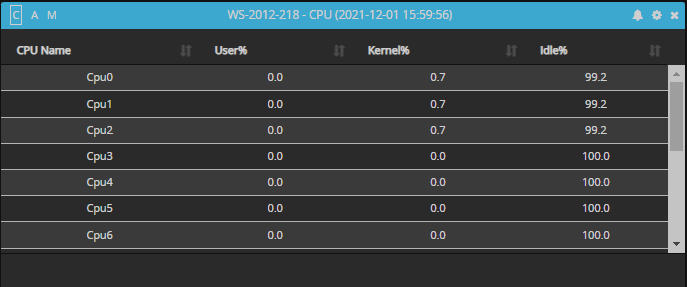
[Example of Stack chart]
3) Widget Menu
MENU를 통해 최대값, 평균값, 현재값 확인 및 알림설정, Report export 등을 할 수 있습니다.
STEP 1 : 현재값, 평균값, 최대값을 라벨에서 확인할 수 있습니다.
-
- 현재 값과 현재 Agent 시간을 확인할 수 있습니다.
-
- Widget 시작 시간부터 평균값을 확인할 수 있습니다.
-
- 최대값과 Agent 시간을 확인할 수 있습니다.
STEP 2 : 차트 관련 설정을 할 수 있습니다.
- - 해당 위젯의 EVENT 알림을 on/off 합니다.
- - 해당 위젯의 Type, STATISTICS, System을 수정합니다.
- - 해당 위젯을 화면에서 삭제합니다.
STEP 3 : 차트 데이터의 Excel EXPORT, PNG Image Download 및 Print를 할 수 있습니다.
[Example of EXCEL file exported]
[Example of Image file exported]

4) XLog Chart
application의 트랜잭션이 하나의 점으로 표시 됩니다.

STEP 1 : 위젯 선택 시 XLOG 탭을 클릭합니다.
STEP 2 : SYSTEM과 STATISTICS을 선택합니다.
STEP 3 : 원하는 구간을 드래그 합니다

STEP 4 : 구간 속 XLOG 상세 리스트가 팝업으로 표시 됩니다. 한 개를 선택하면 상세 PROFILE을 확인할 수 있습니다.

4. Tool
1) Summary
OS와 DB에 대하여, 일정 기간 동안의 CPU 사용량 평균 그래프를 조회하여 비교해 볼 수 있습니다.

조회 후 기본 그래프는 CPU 평균 그래프를 보여줍니다. CPU 최대 사용 값과 CPU 평균 사용률에 대해서 비교가 가능합니다.
- 상세 사용 방법
상단의 메뉴를 통해 아래와 같이 CLIENT와 조회 기간을 선택할 수 있습니다.

STEP 1 : System 선택(OS, DB, aPPLICATION)
STEP 2 : 편리한 방식의 combo방식 기간 선택(1일, 1주일, 1개월, 3개월, 6개월, 1년)
STEP 3 : 사용자가 직접 기간 선택
STEP 4 : all day 선택시 00시 ~ 23시로 자동 선택
STEP 5 : 3번에 선택된 기간에 대한 시간 선택
STEP 6 : TOP 서버 중 N개의 서버 조회
CPU 최대 값과 함께 CPU평균 및 가중치 평균에 대해서 비교할 수 있습니다.
- TOP 서버들의 CPU 평균

- TOP 서버들의 CPU 가중치 평균값 확인

※ DB 의 경우 , DB Time을 비교할 수 있습니다.
※ Application 의 경우 , TPS를 비교할 수 있습니다.

특정 CLIENT의 상세내역을 조회하기 위해서는 해당 서버의 BAR를 클릭하면, 해당 서버의 CPU, Memory, Paging, Disk, Network에 대한 사용률을 확인할 수 있습니다.
TOP-DOWN 방식으로 분석이 가능하고, OS는 Top process를 확인할 수 있고 DB는 TOP SQL을 확인할 수 있습니다.
Application은 TOP Service, TOP SQL, Top Exception을 확인할 수 있습니다.


Top Process, Disk, Network TAB을 통해서 가장 많이 사용한 자원을 확인할 수 있습니다.


2) Analyzer
Analyzer기능을 통해 기간별로 CLIENT의 과거 데이터 분석이 가능합니다. 원하는 CLIENT와 STATISTICS를 선택하여 확인이 가능합니다.
한 그래프에서 마우스를 이동하면, 해당 화면의 모든 차트에서 같은 시간대의 시계열 축이 움직이면서 동 시간대 자원 사용률을 비교할 수 있습니다.
* 상세 사용 방법
시계열, 구간 분석도구 입니다. 아래와 같은 방법으로 데이터를 조회할 수 있습니다.
STEP 1 : System을 선택합니다.
STEP 2 : STATISTICS를 선택합니다.
STEP 3 : 기간을 선택합니다.
STEP 4 : 차트의 FOCUS에 맞는 시간을 보여줍니다.
STEP 5 : 조회된 차트, STATISTICS 및 CLIENT를 변경하여 조회하면 새로 차트가 만들어지며 비교분석을 할 수 있습니다.
STEP 6 : Chart Menu 입니다.
-
 - 차트 데이터를 초단위, 분단위, 시간단위, 일단위로 조정할 수 있습니다.
- 차트 데이터를 초단위, 분단위, 시간단위, 일단위로 조정할 수 있습니다. -
 - 차트 형태를 라인, 바, 스택으로 바꿀 수 있습니다.
- 차트 형태를 라인, 바, 스택으로 바꿀 수 있습니다. -
 - 차트를 기준으로 한 상관계수 Report 를 확인할 수 있습니다.
- 차트를 기준으로 한 상관계수 Report 를 확인할 수 있습니다. -
 - 조회한 차트를 닫습니다.
- 조회한 차트를 닫습니다. -
 - 차트 데이터를 엑셀 EXPORT, PNG 파일 다운로드, Print로 출력 할 수 있습니다.
- 차트 데이터를 엑셀 EXPORT, PNG 파일 다운로드, Print로 출력 할 수 있습니다.
STEP 7 : 화면에 보여지는 모든 차트에서 FOCUS를 같은 시점으로 이동시키면서 비교분석 할 수 있습니다.
※ 해당 그래프에서 원하는 구간을 드래그, CLICK하면 자세한 정보를 확인할 수 있는 POP-UP창이 나타납니다.
※ XLOG 차트에 경우 원하는 구간을 드래그 하면 상세 XLOG 리스트 POP-UP 창이 나타납니다.
-
Performance Report 버튼을 클릭하여, 해당 차트의 데이터를 기준으로 하여 상관도를 분석해 주는 Report 를 확인할 수 있습니다.
-
해당 차트의 System 과 Statistics 중 기준으로 사용할 데이터를 선택하고, 상관도를 분석하고자 하는 System 을 원하는 만큼 선택하면, Target System 이 가지는 모든 스탯과의 상관도를 분석하여 높은 순으로 10개의 스탯 차트를 확인하고, Report 출력할 수 있습니다.

3) Event
이벤트 조회 및 분석 도구 입니다. 이를 통해 EVENT들의 상태를 한 눈에 확인할 수 있습니다.

* 상세 사용 방법

STEP 1 : EVENT를 조회할 대상 CLIENT를 조회합니다.
STEP 2 : EVENT 값을 조회(선택하지 않을 경우 전체 조회)합니다.
STEP 3 : 기간 선택 후 “INQUIRY” 버튼을 누릅니다.

STEP 4 : TOP EVENT 정보를 확인할 수 있습니다.

STEP 5 : EVENT LIST정보를 확인할 수 있습니다.
4) Quick Parameter Check
전체 시스템 파라미터 권고 적용 여부를 확인하는 도구 입니다. 이를 통해 현재 서버의 파라미터가 권고 값을 따르고 있는지 한눈에 확인이 가능합니다.

* 상세 사용 방법
STEP 1 : AIX에서 제공하는 주요 파라미터의 변경여부를 직관적으로 확인이 가능합니다.
- BLACK : 사용되지 않는 파라미터
- RED : 권고치에 맞지 않는 파라미터
- GREEN : 권고치에 해당하는 파라미터
5) Parameter Health Check
파라미터 변경에 따른 권고사항을 확인할 수 있는 분석도구 입니다. 이를 통해 권고 치와 현재 파라미터 상태를 확인할 수 있습니다.
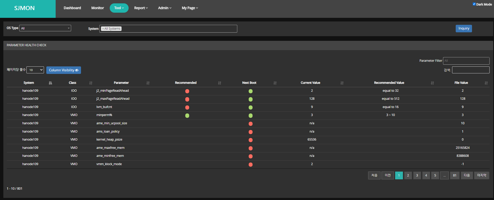
* 상세 사용 방법

STEP 1 : SYSTEM을 선택 후 조회합니다.

STEP 2 : SYSTEM을 이름을 보여줍니다.
STEP 3 : 설정된 파라미터를 보여줍니다.
STEP 4 : 권고치 파라미터 값을 보여줍니다.
STEP 5 : NEXT BOOT값을 보여줍니다.
STEP 6 : SYSTEM의 현재 파라미터 value를 보여줍니다.
STEP 7 : 권고된 VALUE 값을 보여줍니다.
6) Parameter Change History
파라미터 변경에 따른 history를 분석할 수 있는 도구입니다.
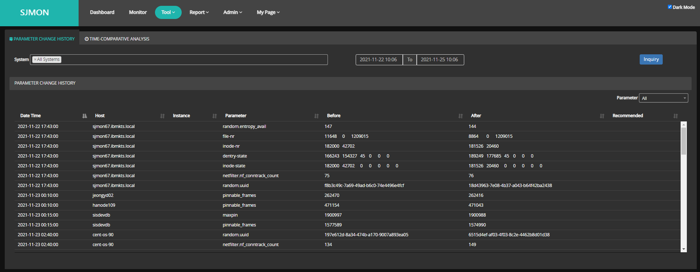
* 상세 사용 방법
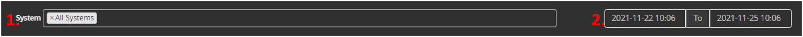
STEP 1 : 파라미터 변경을 확인 할 HOST를 선택합니다.
STEP 2 : 변경 기간 선택 후 INQUIRY 버튼을 누릅니다.
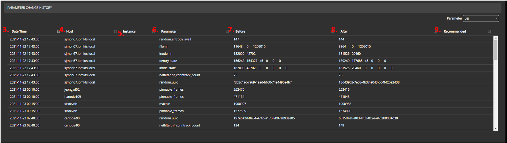
STEP 3 : 변경 시간을 확인합니다.
STEP 4 : 변경이 일어난 CLIENT 를 확인합니다.
STEP 5 : 변경이 일어난 DB INSTANCE를 확인합니다.
STEP 6 : 변경이 일어난 파라미터를 확인합니다.
STEP 7 : 변경되기 전의 값을 확인합니다.
STEP 8 : 변경된 이후의 값을 확인합니다.
STEP 9 : 현재 권고된 값을 확인합니다.
Time-comparative Analysis 탭에서는 두 날짜의 전체 파라미터 값을 비교할 수 있습니다.
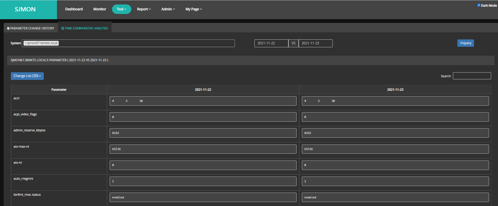
7) AIX Virtualization
AIX Virtualization 툴이 제공하는 물리적 machine의 자원 사용 현황을 통해 서버 자원 할당 계획에 활용할 수 있습니다.
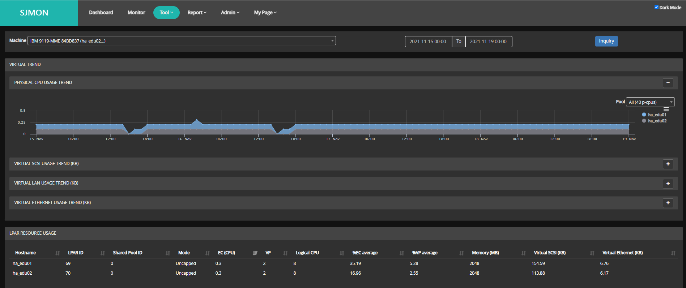
* 상세 사용 방법

STEP 1 : MACHINE 을 선택합니다.
STEP 2 : 기간 선택 후 INQUIRY 버튼을 누릅니다.

STEP 3 : TREND 차트를 확인 (CORE 별 분석) 합니다.
STEP 4 : PHYSICAL COU USAGE TREND, SCSI USAGE TREND, LAN USAGE TREND, ETHERNET USAGE TREND 차트를 확인할 수 있습니다.
STEP 5 : LPAR 정보를 확인합니다.
5. Report
1) Quick Resource Trend
Resource Trend툴에서 제공하는OS자원 활용 패턴을 통해 Leak등의 문제를 감지할 수 있으며, 아키텍처 개선의 아이디어를 얻을 수 있습니다

* 상세 사용 방법
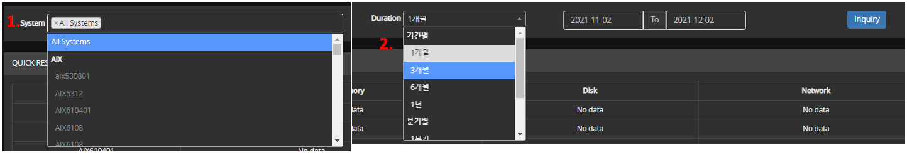
STEP 1 : MACHINE 을 선택합니다.
STEP 2 : 기간 선택 후 INQUIRY 버튼을 누릅니다.
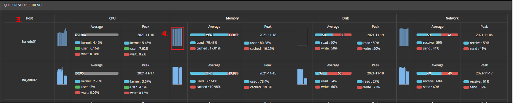
STEP 3 : CLIENT별로 조회 기간 동안의 미니 트렌트 차트와 함께, 평균 사용량, 최대 사용량 정보를 확인합니다.
STEP 4 : Performance Chart 를 확인하려면, 기준이 될 STATISITCS 에 해당하는 미니 트렌드 차트를 클릭합니다. (Client 이름을 클릭하면 CPU 기준)

STEP 5 : MACHINE 을 선택합니다.
2) Comparative Time Analysis
CLIENT를 2개의 다른 기간으로 동시에 분석 가능합니다.
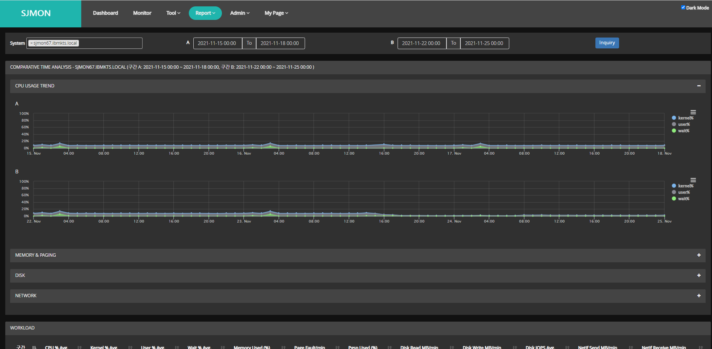
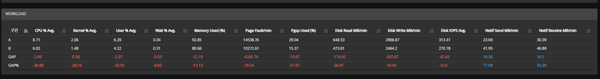
* 상세 사용 방법
STEP 1 : CLIENT를 선택합니다..
STEP 2 : 구간 A를 선택합니다.
STEP 3 : 구간 B를 선택합니다.
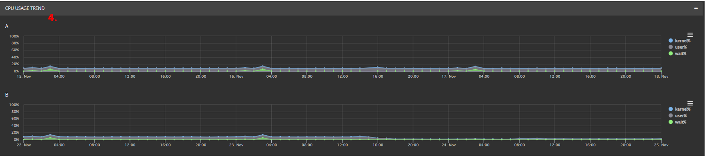
STEP 4 : 선택된 A구간과 B 구간의 비교 분석을 할 수 있습니다. 차트 드래그 시, Ananlyzer 로 이동하여 차트를 상세 확인할 수 있습니다.
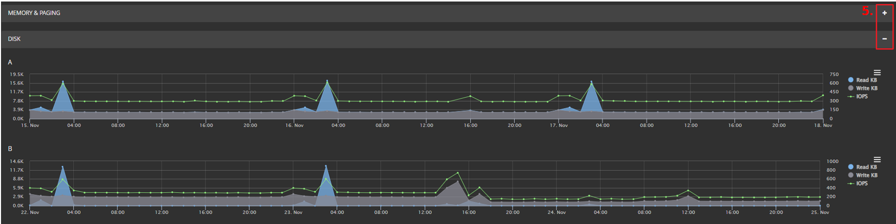
STEP 5 : + ,- 버튼으로 Memory, Disk, Network 비교 차트도 볼 수 있습니다.
STEP 6 : 선택된 A 구간과 B 구간의 WORKLOAD를 확인 할 수 있으며 GAP을 확인할 수 있습니다.
3) Comparative System Analysis
설정한 기간에 따른 여러 대의 system 의 비교분석을 제공합니다.
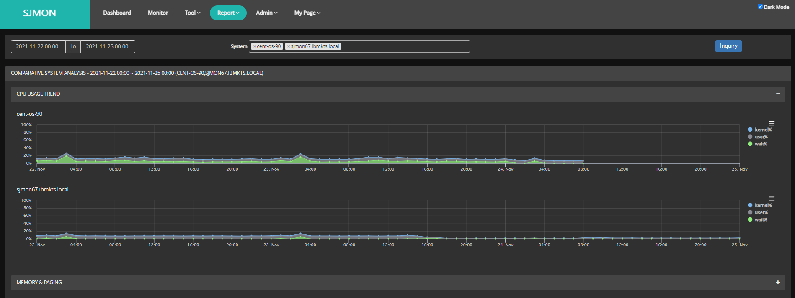
* 상세 사용 방법
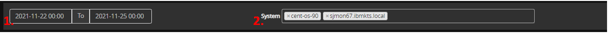
STEP 1 : 구간을 선택합니다.
STEP 2 : 비교 할 system 선택 후 조회합니다.
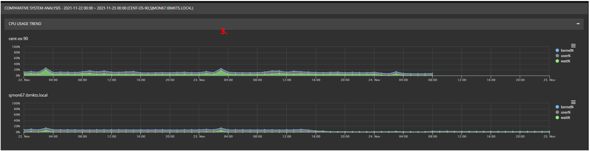
STEP 3 : 조회된 서버들을 비교분석 할 수 있습니다. 차트 드래그 시, Ananlyzer 로 이동하여 차트를 상세 확인할 수 있습니다.
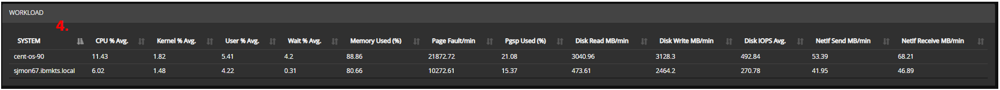
STEP 4 : WORKLOAD를 system별로 확인할 수 있습니다.
4) Preventive Maintenance
PM Script가 수행된 결과를 SJMON Viewer에서 확인 및 관리가 가능합니다.
4-1) Pm Report
SJMON Viewer에 접속 -> Report -> Preventive Maintenance -> PM Report 선택
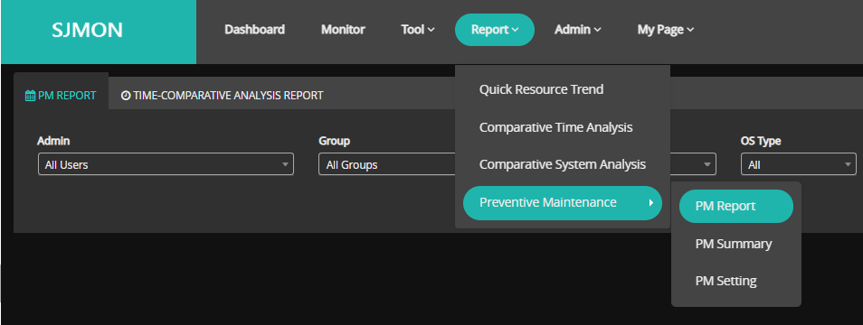
접속하여 원하는 User, Group, Maintenance, OS Type, Host 선택 및 원하는 달 조회 가능합니다.
-
File Upload 버튼을 통해 직접 업로드할 PM Script 결과 파일이나 PM Report 를 Export 할 때 사용할 cover 파일 업로드합니다.
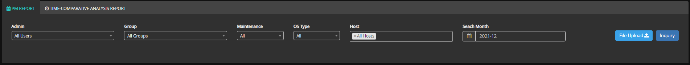 -
PM Script : 업로드 규칙에 맞는 파일명을 가진 txt 파일 업로드합니다.
-
PM Cover : PM Report export 시 필요한 cover 파일을pm_report_cover.docx 로 생성하여 업로드합니다.
-
원하는 조건 선택하여 조회 시 해당 달의 PM Report 결과 확인 가능
-
OS Type 별로 총 수집된 Report 수 확인 가능
-
Prev / Next 버튼을 통해 이전달 / 다음달 이동하여 조회 가능
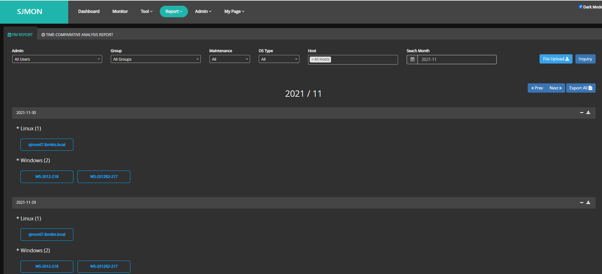 -
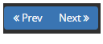 - 이전달, 다음달 조회
- 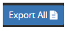 - 조회된 달의 모든 PM Report 를 export
- 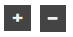 - 날짜별 수집 내역 보여주기 / 숨기기
- - 원하는 날짜의 모든 PM Report를 export
-
월별, 일별 export 가능합니다.
-
각 PM Report 를 zip 파일로 압축하거나 모든 PM Report를 하나의 word 파일로 내보내는 옵션 선택 가능합니다.
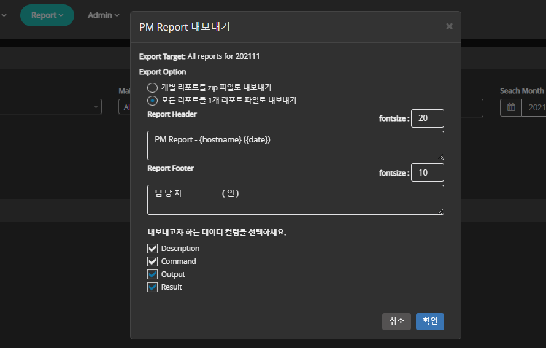
[모든 리포트를 1개 리포트 파일로 내보내기]
[개별 리포트를 zip 파일로 내보내기]
-
원하는 날짜의 Host 클릭 시 하단에서 상세 PM Report 확인 가능합니다.
-
PM 결과에 대한 점검 결과 확인 및 작성, 삭제 가능합니다.
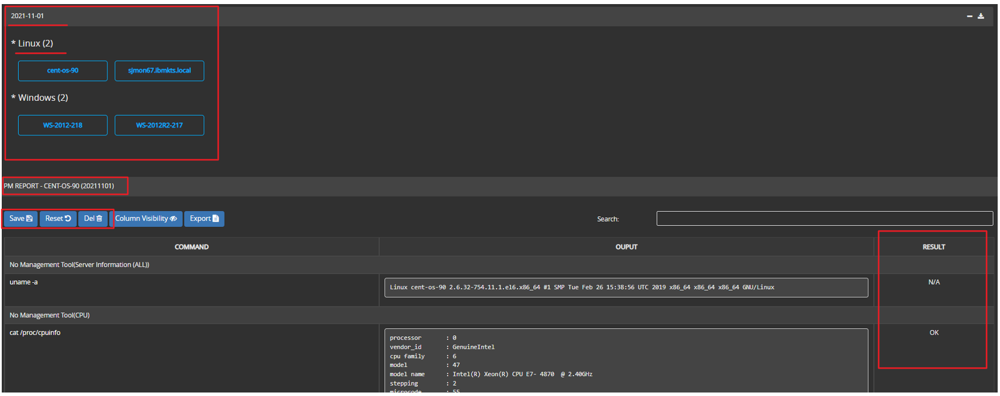 -
 - 현재의 점검 결과 및 수동 입력한 내용으로 저장
- 현재의 점검 결과 및 수동 입력한 내용으로 저장 -
 - 입력 및 저장한 내용을 없애고 기본 점검 결과로 초기화
- 입력 및 저장한 내용을 없애고 기본 점검 결과로 초기화 -
 - 조회한 PM Report 삭제
- 조회한 PM Report 삭제 -
Column Visibility 버튼에서 OUTPUT과 RESULT 컬럼 숨김 처리 가능
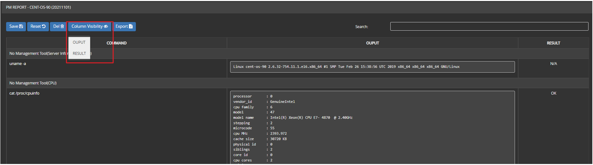
-
Export 버튼으로 해당 Report 를 Word 로 export 가능
-
Report table 의 앞에 입력할 Header와 뒤에 입력한 Footer의 내용과 글자 크기 설정 가능
-
내보내고자 하는 컬럼 선택 가능 (Description 과 Command 는 필수선택)
- Time-comparative Analysis Report 에서 두 날짜의 결과값 비교 가능
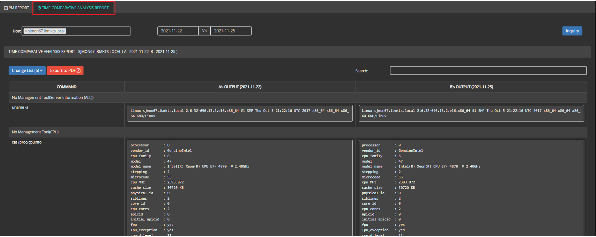
4-2) PM Summary
원하는 User, Group, Maintenance, OS Type, Host 선택 및 원하는 기간 조회하여 통합 점검 결과 및 권고사항 확인 가능합니다.
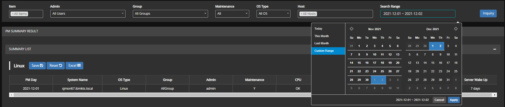
-
Item: Summary List와 Check List 중 원하는 항목 조회 가능
-
Admin: 선택한 User 가 Admin 으로 설정되어 있는 Host 조회 가능
-
Group: 선택한 Group 에 포함된 Host 조회 가능
-
Maintenance: 선택한 유지보수 여부와 일치하는 Host 조회 가능
-
Host: 선택한 Host 조회 가능
-
Search Range: 선택한 기간 동안의 PM Report 조회 가능 (기본값: 당월초~오늘)
-
- PM Report가 수집된 날짜: Bold+Underline된 날짜로 확인 가능
- Today, This Month, Last Month 버튼을 클릭하여 자주 조회하는 기간 선택 가능
- 원하는 기간 입력하고자 하는 경우, 시작일-종료일을 차례로 클릭하여 Custom Range 설정 가능
- 하단에서 선택한 날짜를 확인 가능 (Apply를 누르지 않아도 자동으로 Search Range 에 값 적용됨)
Summary List 에서는 OS Type 별로 점검 결과(OK, Warning, Critical, Recommend)를 한 눈에 확인 가능합니다.
-
기본 점검값 확인 및 수동 입력하여 저장 가능
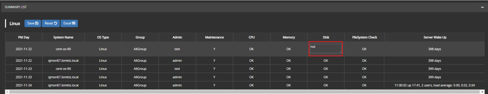 -
 - 현재의 점검 결과 및 수동 입력한 내용으로 저장
- 현재의 점검 결과 및 수동 입력한 내용으로 저장 -
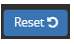 - 입력 및 저장한 내용을 없애고 기본 점검 결과로 초기화
-
- 해당 OS Type의 PM Summary 결과를 엑셀 형식으로 export
[Excel Export]
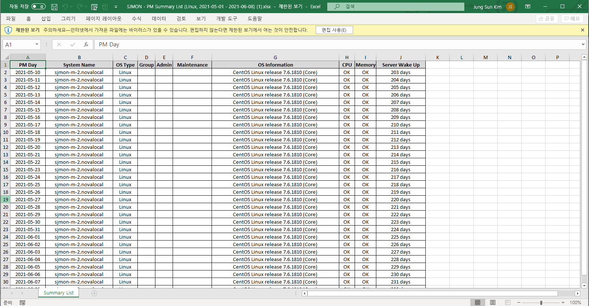
Check List에서는 조회한 PM Report 의 점검에 사용된 항목과, 점검 결과 및 권고 사항을 리스트 형태로 확인 가능합니다.
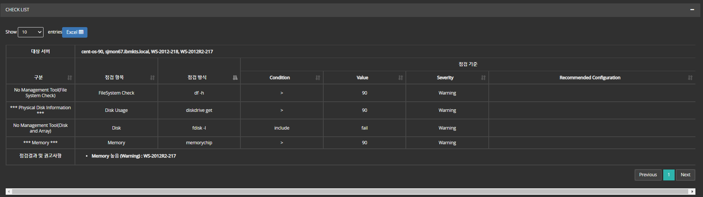
[Excel Export]

4-3) PM Setting
PM Report을 활용한 PM Summary 점검 기준 목록을 확인하는 메뉴를 제공합니다.
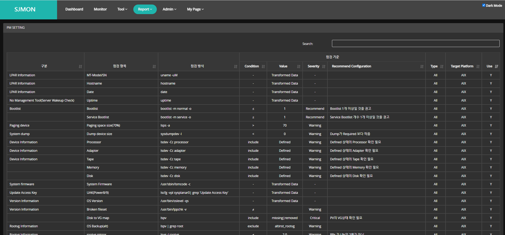
6. NAGIOS
NAGIOS에서 수집한 Host, Service의 정보를 쉽게 확인 할 수 있습니다.
※ 해당 메뉴는 NAGIOS와 연동이 되어야 이용 할 수 있는 메뉴입니다.
1) Host Status
NAGIOS에 등록 된 Host의 상태 및 호스트 별 서비스 상태 현황 및 통계를 확인 할 수 있습니다
SJMON Viewer에 접속 -> Nagios -> Host Status 선택

- 화면의 데이터가 갱신 된 시간을 표기합니다.
- Host 서버의 UP, Down 상태를 표기합니다.
-
SJMON CLIENT의 실행여부를 표기합니다.
-
컬럼 값이 'Y’ 일 경우(=실행 상태) 클릭 시 해당 Host의 모니터 화면으로 이동합니다.
-
컬럼 값이 ‘N' 일 경우(=중지 또는 미 연결 상태 ) 클릭이 불가능합니다.
-
해당 Host의 모니터 화면으로 이동이 불가합니다
- 각 호스트의 서비스 상태 별 합산 정보를 표기합니다.
(상태에 대한 기준은 NAGIOS Rule Configuration에 의해 산정됩니다.)
- 합산 정보에 대한 셀을 클릭 시 클릭 한 상태의 상세 정보를 하단에 출력합니다.
(추가 클릭 시 상세 화면은 닫힙니다.)
2) Service Status
NAGIOS에 등록 된 그룹별 Service의 상태 및 서비스 현황을 확인 할 수 있는 메뉴를 제공합니다.
※ 해당 메뉴는 NAGIOS와 연동이 되어야 이용 할 수 있는 메뉴입니다.
SJMON Viewer에 접속 -> Nagios -> Service Status 선택
- ALL SERVICE STATUS 는 전체 서비스에 대한 상태 별 합계를 나타냅니다.
(상태에 대한 기준은 NAGIOS Rule Configuration에 의해 산정됩니다)
- 각 서비스 그룹 별 서비스상태 (좌측부터 OK, WARNING, CRITICAL) 및 합계를 나타냅니다.
- 상태 도넛 차트를 클릭 시 해당 그룹, 상태에 대한 전체 Service 내역을 팝업으로 확인 할 수 있습니다.
3) Event Console
NAGIOS에 발생한 최근 3일의 모든 이벤트(=HOST, SERVICE 상태 변동 및 NOTIFICATION 발생내역)를 확인 할 수 있습니다.
※ 해당 메뉴는 NAGIOS와 연동이 되어야 이용 할 수 있는 메뉴입니다.
SJMON Viewer에 접속 -> Nagios -> Event Console 선택
-
- 클릭 시 화면을 갱신합니다.
-
Comment 의 SJMON_THRESHOLD로 표기된 내용은 SJMON THRESHOLD로 인하여 발생한 NOTIFICATION 내용입니다.
7. Admin
1) User
SJMON에 접속 가능한 유저를 관리할 수 있는 메뉴를 제공합니다.
NAGIOS연동 시 NAGIOS USER와 연동이 됩니다.

Add 버튼을 눌러 USER를 추가할 수 있습니다.
NAGIOS와 연동 했을 경우 NAGIOS USER도 추가 됩니다.
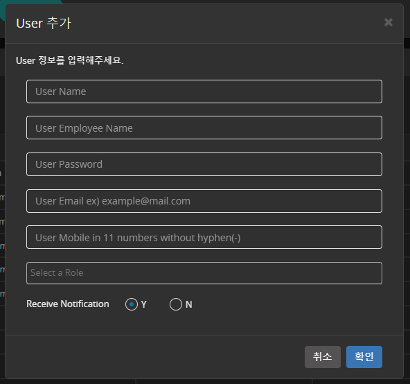
- User Name : 원하는 User Name을 입력합니다. (로그인 ID : 중복불가)
- User EmP NAME : 본인의 이름을 입력합니다.
- User Password : User의 Password를 입력합니다.
- Select a Role : User와 Admin중에 선택이 가능합니다. Role이 User 인 경우 Admin 메뉴를 접근할 수 없습니다. NAGIOS 연동 되었을 경우 설정 된 Nagios의 ROLE을 연동합니다. (default nagios role명 : Admin, user)
- Recevie Notification : USER의 nOTIFICATION 수신 여부가 선택 가능합니다. (nagios Recevie Notification에 대한 설정 )
Edit 버튼을 눌러 User의 정보를 변경할 수 있습니다.
NAGIOS 연동 했을 경우 NAGIOS USER도 수정 됩니다. (NAGIOS에 수정 대상 USER가 없을 경우는 자동으로 추가합니다.)
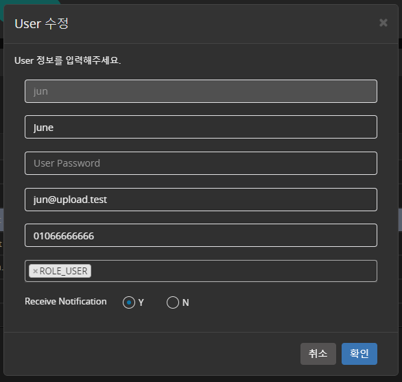
Del버튼을 눌러 USER를 삭제할 수 있습니다.
NAGIOS와 연동 했을 경우 NAGIOS USER도 삭제 됩니다.
Upload 버튼을 눌러 USER List 를 csv형식으로 한 번에 등록할 수 있습니다.
NAGIOS와 연동 했을 경우 NAGIOS USER도 일괄 등록 됩니다.

아래와 같은 형식으로 만들어진 파일을 작성하여 업로드하면 일괄 등록 가능합니다.
-
User Type : ROLE_ADMIN 은 1, ROLE_USER는 2 입력
-
Notification : Y, N 입력
-
일괄 등록 시 초기 비밀번호는 1234 (NAGIOS와 연동했을 경우에도 일괄 등록되는 NAGIOS USER의 패스워드도 1234 입니다.)
2) Inventory
System 메뉴를 통해 현재 Manager에 등록되어 있는 CLIENT들의 정보를 확인할 수 있고, AIX에 관련된 Hardware/Software(AIX, PowerHA, GPFS, VIOS, F/W)의 정보를 최신 Level과 비교해서 보여줍니다.
뿐만 아니라 CLIENT의 신규설치, 패치, 파일 이동 및 명령어 실행도 할 수 있습니다.

 - NAGIOS Host 추가, 수정, 연동 버튼 모음. (※ NAGIOS 연동 했을 경우에만 보입니다)
- NAGIOS Host 추가, 수정, 연동 버튼 모음. (※ NAGIOS 연동 했을 경우에만 보입니다) - SJMON CLIENT 추가, 수정 삭제
- SJMON CLIENT 추가, 수정 삭제 - SJMON CLIENT 목록 EXCEL 출력
- SJMON CLIENT 목록 EXCEL 출력 - SJMON CLIENT 목록 컬럼 항목 보여주기 / 숨기기
- SJMON CLIENT 목록 컬럼 항목 보여주기 / 숨기기 - 패치파일, Verification 파일, Business 정보 업로드
- 패치파일, Verification 파일, Business 정보 업로드 - CLIENT의 설치, 명령어 실행, 파일 이동
- CLIENT의 설치, 명령어 실행, 파일 이동 - Deploy 결과 및 패치 내역 조회
- Deploy 결과 및 패치 내역 조회 - Verification 반영
- Verification 반영
2.1) Inventory 정보 IMPORT 기능
Import 버튼을 통해 신규 CLIENT를 등록 할 수 있습니다.
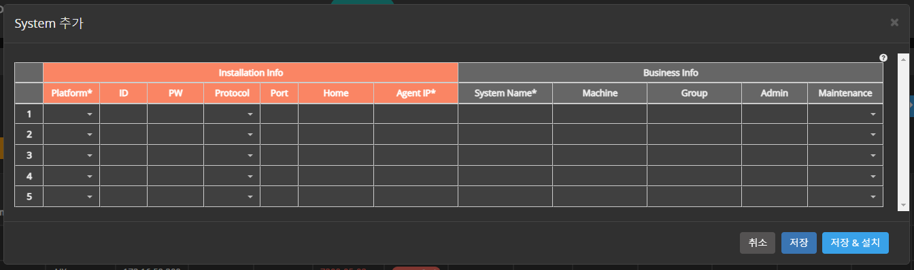
* Installation Info : 설치 시 필요한 정보
-
Platform: SJMON PLATFORM명 (필수값)
-
ID: 접속 계정 ID
-
PW : 접속 계정 패스워드
-
Protocol : 접속 및 파일 다운로드를 사용을 위한 프로토콜 (Telent/FTP, SSH/SFTP 중 택일)
-
Port: 접속을 위한 포트(빈 값일 경우 선택한 Protocol의 디폴트 포트)
-
HOME: 실행을 위한 client 실행 위치
-
Agent IP: 접속IP (ipv4) (필수값)
* Business Info : Business 관리에 필요한 정보
- System Name : 설정 할 System의 이름 (필수값)
- Machine: Machine 그룹
- Group : Business 그룹
- Admin : 관리자명
- Maintenance : 유지보수여부
※ 필수값은 저장 후 수정이 불가능합니다 .
엑셀을 이용하여 복사 및 붙여넣기가 가능합니다.
셀 우클릭 시 import 작성의 편리한 기능을 사용 할 수 있습니다.
-
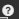 - 초기 설치 안내 툴팁입니다. (아이콘에 마우스를 올려놓았을 때 확인 가능합니다)
-
row 추가, 삭제, 셀 복사 및 저장(=save as) 기능을 제공합니다. (셀에 마우스 우 클릭 시 발생)
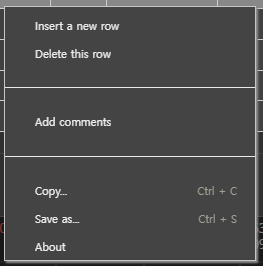
2.2) Inventory 정보 Edit 기능
Edit 버튼을 통해 CLIENT의 일부 정보를 수정할 수 있습니다.
※ Platform, Agent IP, System Name에 대해서는 수정이 불가합니다.
[단일 CLIENT 수정 화면]
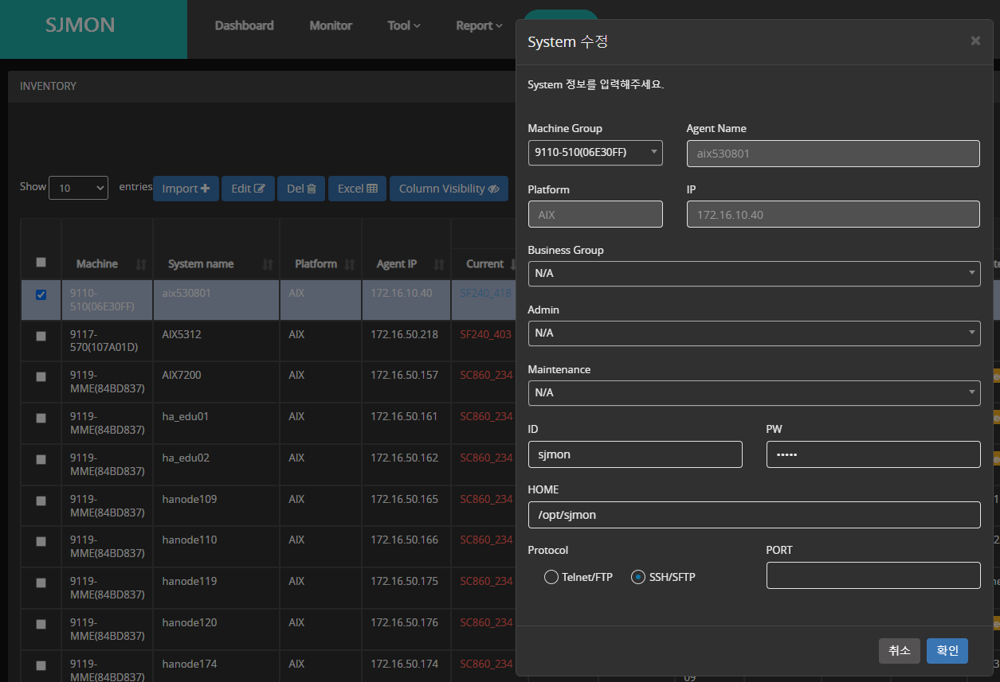
[2개 이상 CLIENT 수정 화면]
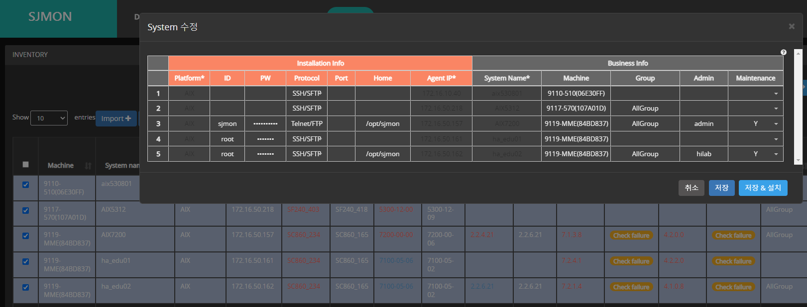
* Installation Info : 설치 시 필요한 정보
- Platform : SJMON PLATFORM명 (수정 불가)
- ID : 접속 계정 ID
- PW : 접속 계정 패스워드
- Protocol : 접속 및 파일 다운로드를 사용을 위한 프로토콜 (Telent/FTP, SSH/SFTP 중 택일)
- Port : 접속을 위한 포트(빈 값일 경우 선택한 Protocol의 디폴트 포트)
- HOME : 실행을 위한 client 실행 위치
- Agent IP : 접속IP (ipv4) (수정 불가)
* Business Info : Business 관리에 필요한 정보
- System Name : 설정 할 System의 이름 (수정 불가)
- Machine : Machine 그룹
- Group : Business 그룹
- Admin : 관리자명
- Maintenance : 관리대상여부
2.3) Inventory 정보 Delete기능
Del 버튼을 통해 더 이상 사용하지 않는 CLIENT를 삭제할 수 있습니다.
2.4) File Upload 기능
패치파일, Verification 파일과 그 외 원하는 파일을 매니저 서버에 업로드 할 수 있습니다. Tar 확장자 파일의 경우에는, 자동 untar 작업 수행 여부를 선택할 수 있습니다.
패치파일과 Verification 파일은, 업로드 규칙에 맞는 이름으로 업로드하면 서버에 저장됩니다.
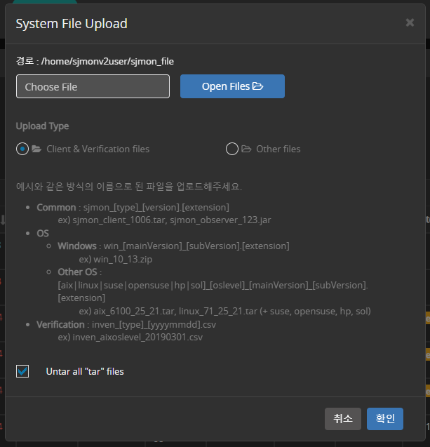
그 외 원하는 파일을 업로드하고자 하는 경우, 원하는 위치를 작성하여 업로드하면 해당 위치에 저장됩니다.
2.5) System Deploy 기능
신규 CLIENT의 AGENT 설치, 기존 CLIENT의 AGENT 패치, 명령어 실행, 파일 전송을 할 수 있게 합니다. (※ PLATFROM 종류가 OS, NAGIOS의 CLIENT만 가능합니다.)
- Install/Patch Client
선택한 Agent에 대해서 설치, 패치를 할 수 있습니다.
{home} - Inventory 에 저장된 Client 각자의 HOME 값
(저장 값 없으면 sjmon.properties 의 sjmon.home 값 (기본/opt/sjmon참조))
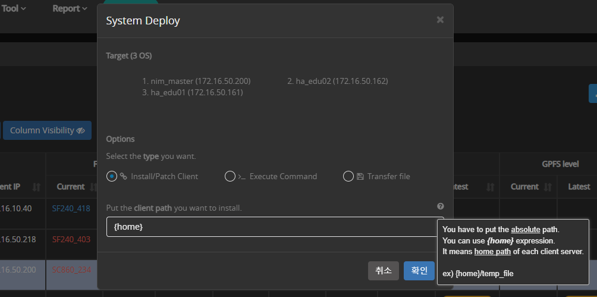
 - CLENT 경로 안내입니다. (아이콘에 마우스를 올려놓았을 떄 확인 가능합니다)
- CLENT 경로 안내입니다. (아이콘에 마우스를 올려놓았을 떄 확인 가능합니다)
- Execute Command
선택한 Agent에 대해서 입력한 명령어를 실행 할 수 있습니다.
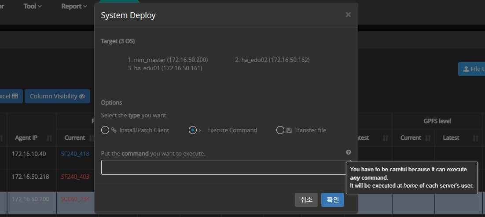 - 명령어 실행 안내 (아이콘에 마우스를 올려놓았을 때 확인 가능합니다.)
- 명령어 실행 안내 (아이콘에 마우스를 올려놓았을 때 확인 가능합니다.)
- Transfer file
MANAGER 또는 LOCAL에서 지정한 파일을 선택한 Agent에 파일을 일괄적으로 업로드 할 수 있습니다.
[MANAGER -> CLIENT]

[LOCAL(=PC) -> CLIENT]

 - MANAGER, CLIENT 경로 안내 (아이콘에 마우스를 올려놓았을 떄 확인 가능합니다)
- MANAGER, CLIENT 경로 안내 (아이콘에 마우스를 올려놓았을 떄 확인 가능합니다)
모든 실행 결과는 History 버튼을 통해 CLIENT 최근 패치 실행 내역을 확인할 수 있습니다.
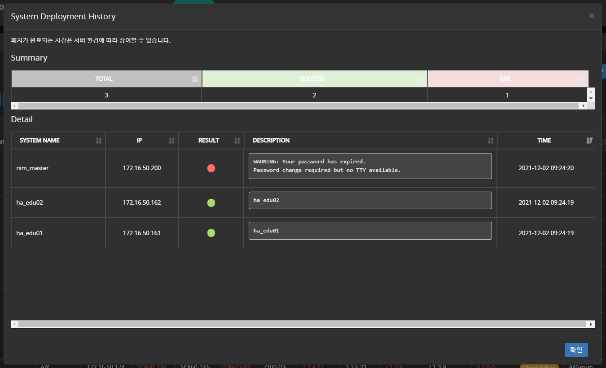
2.6) Version Check 기능
IBM Hardware/Software에 대한 최신 버전 및 호환성 여부를 IBM 공식 site의 정보를 기준으로 자동 체크합니다.
- Version Check 참조 Site
| OS | 설명 |
|---|---|
| AIX OS Version | System to AIX maps |
| PowerHA Version | Fix Central Cross-product relationship information |
| GPFS Version | Fix Central Cross-product relationship information |
| VIOS Version | System to VIOS maps |
| F/W Version | Fix Central Cross-product relationship information |
SJMON Viewer에서 확인합니다.
SJMON -> Admin -> Inventory menu에서 확인
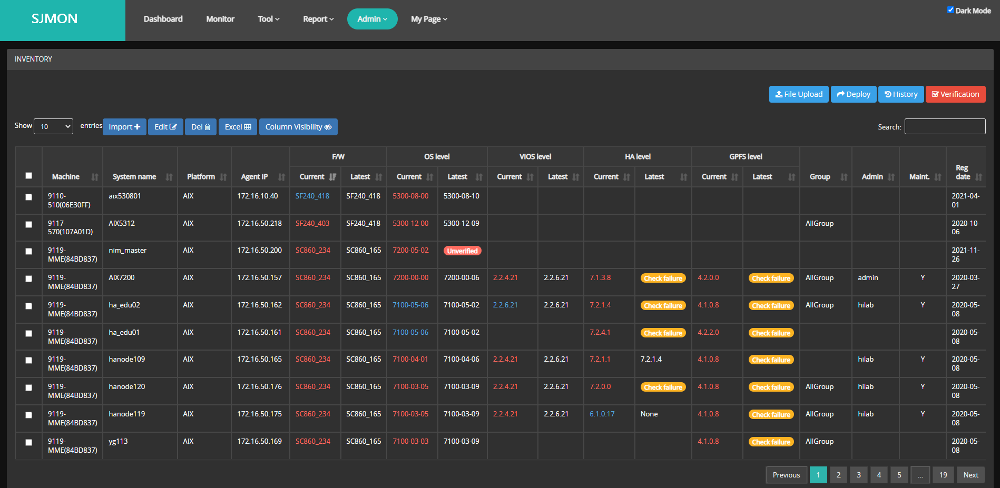
* AIX OS Version

- AIX 버전의 TL을 기준으로 IBM System to AIX maps site 에서 제공하는 해당 버전의 Latest SP까지 비교하여 버전이 낮으면 붉은색 동일하면 파란색으로 표시
* PowerHA Version
- PowerHA의 Release 버전을 기준으로 IBM Fix central site에서 제공하는 해당 버전의 Latest SP까지 비교하여 버전이 낮으면 붉은색, 동일하면 파란색으로 표시
- 현재 AIX 버전에서 현재 설치되어 있는 PowerHA버전이 지원이 안되는 경우 Unverified로 표시
- 비교 대상이 존재하지 않는 경우 Check failure로 표시
* GPFS Version Check
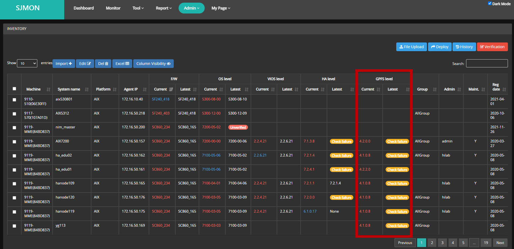
-
GPFS의 Release 버전을 기준으로 IBM Fix central site에서 제공하는 해당 버전의 Latest SP까지 비교하여 버전이 낮으면 붉은색, 동일하면 파란색으로 표시
-
현재 AIX 버전에서 현재 설치되어 있는 GPFS버전이 지원이 안되는 경우 Unverified로 표시
-
비교 대상이 존재하지 않는 경우 Check failure로 표시
* VIOS Version Check
-
VIOS의 버전을 기준으로 IBM System to VIOS maps site에서 제공하는 해당 버전의 Recommend 버전과 비교하여 버전이 낮으면 붉은색, 동일하면 파란색으로 표시
-
해당 장비에서 현재 설치되어 있는 VIOS버전이 지원이 안되는 경우 Unverified로 표시
* F/W Version Check
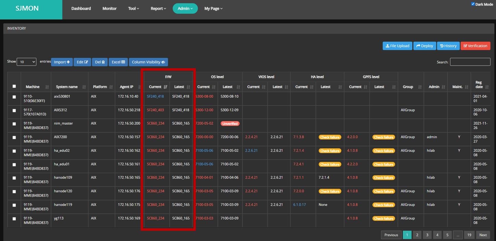
-
F/W 버전을 기준으로 IBM Fix central site에서 제공하는 해당 장비의 최신 F/W를 비교하여 버전이 낮으면 붉은색, 동일하면 파란색으로 표시
-
현재 장비에서 지원이 안되는 경우 Unverified로 표시
주기적으로 배포되는 csv파일을 SJMON Viewer에 등록하면 최신 Version에 대한 데이터를 최신으로 유지할 수 있습니다.
File Upload버튼 클릭합니다.
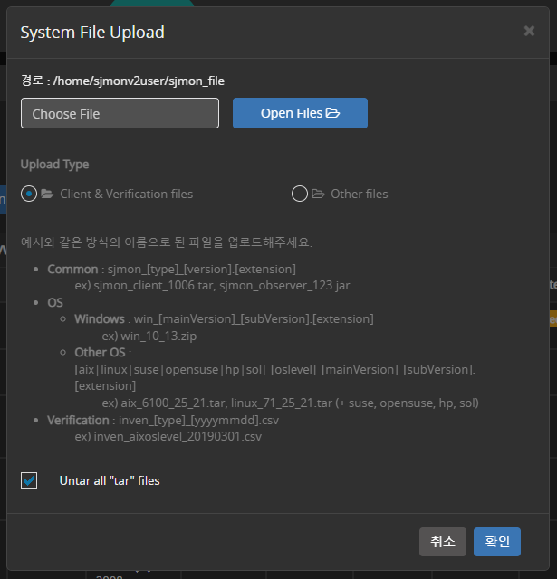
Open Files를 열어 최신 파일을 선택하고 확인버튼을 누르면 최신 데이터가 upload됩니다.
| OS 파일 | 파일명 |
|---|---|
| AIX 파일 | invent_aixoslevel_[date].csv |
| PowerHA 파일 | invent_halevel_[date].csv |
| GPFS 파일 | invent_gpfslevel_[date].csv |
| VIOS 파일 | invent_vioslevel_[date].csv |
| F/W 파일 | invent_fw_[date].csv |
Upload한 최신 데이터로 갱신을 하려면 Verification 버튼을 누릅니다.
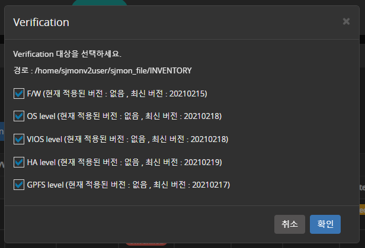
Upload한 파일에 해당하는 내용을 Check하고 확인을 누르면 최신 데이터로 Viewer 내용이 update됩니다.
2.7) NAGIOS Host 등록, 수정, 연동
Inventory 정보에서 NAGIOS의 Host를 등록, 수정 및 SJMON으로 연동이 가능합니다.
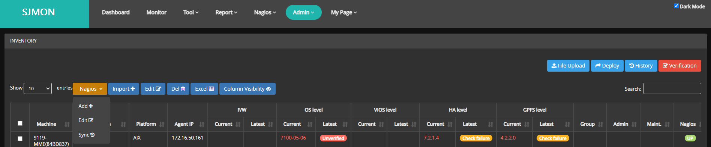
-
 - NAGIOS 호스트 등록 할 수 있는 팝업창을 보여줍니다.
- NAGIOS 호스트 등록 할 수 있는 팝업창을 보여줍니다. -
 - NAGIOS 호스트 수정 하는 팝업을 발생시킵니다.
- NAGIOS 호스트 수정 하는 팝업을 발생시킵니다.
- PLATFORM이 OS계열, NAGIOS인 경우에만 발생합니다.
- 단일 선택에 대해서만 팝업 발생합니다.
 - NAGIOS에 등록 된 호스트와 SJMON의 등록 된 System을 비교하여
- NAGIOS에 등록 된 호스트와 SJMON의 등록 된 System을 비교하여
- SJMON에 없는 HOST를SJMON System으로 등록합니다.
* 상세 등록 정보
[Nagios Host 등록]
STEP 1 : HOST의 정보를 입력합니다.
STEP 2 : Save & Finish를 클릭합니다.
STEP 3 : 상단에 표기 된 1 Change 를 클릭 합니다.
STEP 4 : Activate affected 를 클릭 합니다.
[Nagios Host 수정]
STEP 1 : HOST의 수정 할 정보를 입력합니다.
STEP 2 : Save & Finish를 클릭합니다.
STEP 3 : 상단에 표기 된 1 Change 를 클릭 합니다.
STEP 4 : Activate affected 를 클릭 합니다.
3) System Group
CLIENT들의 GROUP을 관리할 수 있습니다. 다양한 메뉴에서 사용됩니다.
NAGIOS 연동 시 SJMON의 모든 그룹은 NAGIOS의 HostGroup으로 관리 됩니다.
-
MACHINE GROUP : MANAGER가 자동으로 등록하는 MACHINE TYPE 과, 사용자가 Machine 의 성격으로 분류하는 경우 설정하는 GROUP.
-
BUSINESS GROUP : Inventory 에서 관리하는 Client 의 고객사 GROUP.
-
CUSTOM GROUP : 사용자가 용도에 맞게 직접 설정하는 GROUP.
4) Threshold
자원 별 임계치 설정을 통해, 특정 임계치를 초과하는 경우 Dashboard, Monitor, Top Menu화면에 표시합니다. 이를 통해 EVENT를 빠르게 찾아서 조치할 수 있도록 도와줍니다.
Nagios 연동 시 Nagios의 자원 별 임계치를 설정하는 Nagios Host & Service Parameter 그리고 Notification 기능을 관리 사용 가능합니다.
4.1) SJMON THRESHOLD 기능
-
 - SJMON System에 대하여 실시간 THRESHOLD를 설정하는 화면입니다.
- SJMON System에 대하여 실시간 THRESHOLD를 설정하는 화면입니다. -
 - NAGIOS의 RULE, PARAMETER를 설정하는 화면입니다.
- NAGIOS의 RULE, PARAMETER를 설정하는 화면입니다. -
 - NAGIOS의 NOTIFICATION을 설정하는 화면입니다.
- NAGIOS의 NOTIFICATION을 설정하는 화면입니다. -
 - 화면 보여주기 / 숨기기
- 화면 보여주기 / 숨기기 -
 - 등록, 수정, 삭제 버튼
- 등록, 수정, 삭제 버튼 -
 - 초기화면으로 이동
- 초기화면으로 이동
NAGIOS THRESHOLD, NOTIFICATION CONFIGRUAION 설정 화면은 NAGIOS 로그인이 안 되었을 경우 화면에 보이지 않습니다.
Add 버튼을 통해 자원 별로 원하는 임계치를 설정할 수 있습니다.
-
Threshold Name : 사용자가 인식할 수 있는 Threshold 이름을 입력합니다.
-
Statistics Name : 원하는 성능 정보를 선택합니다(CPU, Memory etc.).
-
Condition : 원하는 성능 정보의 임계치를 크거나, 같거나 작은 값으로 설정합니다.
-
Threshold Value : 원하는 성능 정보의 임계치를 설정합니다.
-
Severity : Critical과 Warning중에 원하는 값을 선택합니다.(Threshold의 중요도 선택)
-
Threshold Map Names: 해당 임계치로 Monitoring할 대상 Group 또는 Host를 선택합니다.
-
Use Flag : 사용 여부를 설정합니다.
Edit버튼을 통해 이미 설정된 임계치 값을 변경할 수 있습니다.
- 수정하기 원하는 Threshold name을 선택하고 Edit 버튼을 누릅니다.
4.2) NAGIOS THRESHOLD 기능
Nagios Threshold는 NAGIOS의 Nagios Host & Service Parameter를 통하여 임계치 지정이 가능합니다.
NAGIOS로그인 연동 시 화면에 출력 됩니다.
- NAGIOS에 등록이 가능한 Host를 보여줍니다.
- 해당 Host명 클립보드에 저장합니다. (=Copy)
* 상세 등록 정보
STEP 1 : 설정 할 서비스를 조회합니다.
STEP 2 : Create rule in folder또는 Edit를 클릭합니다.
STEP 3 : 내용 입력 후 Save를 눌러 저장 합니다.
STEP 4 : 상단에 표기 된 1 Change 를 클릭 합니다.
STEP 5 : Activate affected를 클릭 합니다.
4.3) NOTIFICATION CONFIGURATION
Notification Configuration은 SJMON THRESHOLD, NAGIOS THRESHOLD에서 설정된 임계치에 대하여ALERT 지정이 가능합니다.
(※ Nagios 연동 시 사용 가능)
- NAGIOS에 등록이 가능한 Host를 보여줍니다.
- 해당 Host명 클립보드에 저장합니다. (=Copy)
* 상세 등록 정보
STEP 1 : New Rule또는 Edit를 클릭합니다.
STEP 2 : 내용 입력 후 Save를 눌러 저장 합니다.
[NOTIFICATION METHOD]
- NOTIFICATION METHOD는 각종 NAGIOS EVENT 발생 시 수신 받을 방법에 대한 설정입니다.
- (SJMON)의 항목은 SJMON THRESHOLD NOTIFICATION 수신 받을 수 있게 하는 항목입니다. (NAGIOS EVENT 수신 포함)
- Slack(SJMON)을 설정시 하단 Call with the following parameters 입력란에 webhook URL을 입력하여 주시기 바랍니다.
- SMS(usging database)(SJMON) 설정 시 연동 설치 시 설정한 dbconfig.json을 수정하여주시기 바랍니다.
[CONTACT SELECTION]
- CONTACT SELECTION은 NOTIFICATION을 수신 할 USER를 선택합니다.
- 옵션 선택에 따라 한 명에서 여러 명까지 선택이 가능합니다. (반드시 한 명 이상을 선택하여야 합니다.)
- *Slack(SJMON) 선택 시 USER는 대표자 한 명만 지정합니다.
(※ 여러 명 선택 시 채널에 알림이 선택 한 USER 수 만큼 전송됩니다.)
[CONDITIONS]
-
CONDITIONS 은 발생되는 NAGIOS EVENT에 속성을 조건으로 NOTIFICATION 발생 여부를 결정합니다.
-
CONDITION → Match notification comment : SJMON_THRESHOLD입력 시 SJMON에서 발생한 THRESHOLD만 수신됩니다.
-
※ 해당 옵션은 반드시 NOTIFICATION METHOD에 (SJMON) 이 포함된 항목을 선택해야 합니다.
STEP 3 : 내용 입력 후 Save를 눌러 저장 합니다.
STEP 4 : 상단에 표기 된 1 Change 를 클릭 합니다.
STEP 5 : Activate affected를 클릭 합니다.
5) Threshold Monitoring
임계치가 설정된 host는 임계치가 초과하면 Dashboard와 Monitor에서 해당 내용을 직관적으로 확인할 수 있습니다.
-
Top Menu의 Threshold 에 임계치를 초과한 숫자가 표시됩니다.
-
노란색은 Warning, 빨간색은 Critical Event 입니다.
-
Monitor화면에서 설정된 임계치를 초과하는 Statistics는 Warning은 노란색, Critical은 빨간색 테두리로 blink되며 직관적으로 임계치가 초과되었음을 사용자에게 알려줍니다.
-
Blink는 임계치가 초과되고 있는 동안 지속되며 임계치 이하로 다시 떨어지면 멈추게 됩니다. 사용자가 임계치가 초과되고 있는 동안 임의로 blink를 멈추고 싶으면 벨모양의 버턴을 누르면 됩니다.
Nagios와 연동 및 Notification이 설정 되어있는 경우 지정된 사용자에게 설정된 방법으로 전달합니다.
6) Admin Setting
Process, Network Switch Device, Error Log, Parameter, 성능데이터를 효과적으로 모니터링 하기 위해서 수집 조건 및 필터를 설정할 수 있습니다.
6-1) 프로세스 모니터링 설정
이 메뉴에서 설정한 조건에 맞는 프로세스는 Target Process Monitoring 위젯에서 모니터링 가능합니다.
Add, Edit, Del 버튼을 통해 Process Setting 을 추가, 수정, 제거할 수 있습니다.
6-2) 네트워크 설정
Network Switch Device 등록 시 모니터링 가능합니다.
Add, Edit, Del 버튼을 통해 모니터링 하려는 Device 를 추가, 수정, 삭제할 수 있습니다.
-
IP : Network Switch Device의 Network IP를 등록합니다.
-
Name : 장치를 확인할 수 있도록 원하는 이름을 넣어줍니다.
-
Port : default로 161번을 사용하고, 변경이 가능합니다.
-
Community : Network장비에서 community를 확인해서 등록해줍니다.
-
Select a Use : Y / N중에 선택이 가능하고, N을 선택 시 등록은 완료되지만 모니터링을 하지는 않습니다. 설정 후 Manager 를 재시작해야 내용이 반영됩니다.
6-3) 에러 로그 필터
특정 패턴의 에러로그만 수집할 수 있도록 기본 설정이 존재합니다. 모든 에러로그 수집을 원하는 경우 비활성화 처리할 수 있습니다.

Add, Edit, Del 버튼을 통해 filter를 추가, 수정, 제거할 수 있습니다.
6-4) 파라미터 필터
특정 패턴의 파라미터 수집을 원하는 경우 설정하면 조건에 맞는 데이터만 저장됩니다.
Add, Edit, Del 버튼을 통해 filter를 추가, 수정, 제거할 수 있습니다.
6-5) 성능 데이터 필터
특정 패턴의 성능 데이터만 수집을 원하는 경우 설정하면 조건에 맞는 데이터만 저장됩니다.
Add, Edit, Del 버튼을 통해 filter를 추가, 수정, 제거할 수 있습니다.

7) Data Size
SJMON의 각 테이블 정보 및 Size를 확인하고, 원하는 날짜의 데이터를 수동으로 삭제할 수 있습니다.
Delete Data 버튼을 통해 원하는 날짜의 실시간/집계/EPE 데이터를 수동으로 삭제할 수 있습니다.
8. My page
1) Info & Setting
Viewer, Manager, Postgresql 의 버전 정보와 라이선스 정보를 확인할 수 있습니다.
- 버전 및 라이센스 정보
- 화면 및 데이터 관리

- OSS 안내